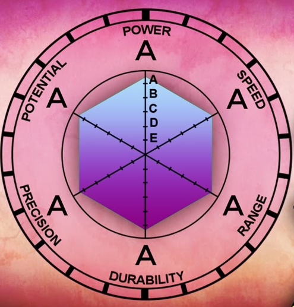

Stats

Point fort
Ami de Jesus
29ans
Pratique les arts martiaux depuis l'âge de 15 ans
En reconversion professionnelle
Adore la "culture geek"
Ami de Jesus
29ans
Pratique les arts martiaux depuis l'âge de 15 ans
En reconversion professionnelle
Adore la "culture geek"